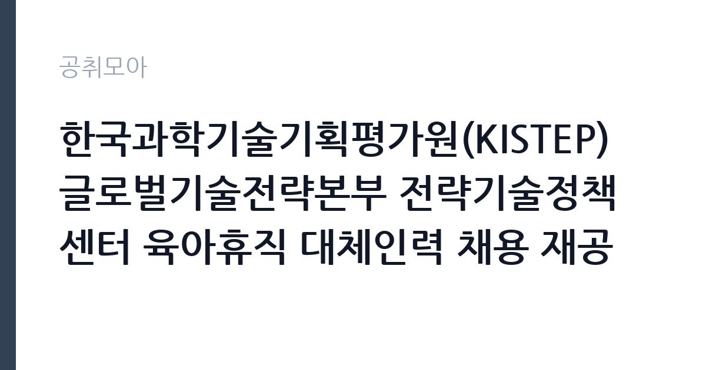

[공공기관] 한국과학기술기획평가원(KISTEP) 글로벌기술전략본부 전략기술정책센터 육아휴직 대체인력 채용 재공고(2차)
한국과학기술기획평가원 · 충북 · 마감 2026-11-13 (D-15) · 출처 잡알리오

한눈에 보는 모집 조건
| 기관 | 한국과학기술기획평가원 |
|---|---|
| 공고명 | 한국과학기술기획평가원(KISTEP) 글로벌기술전략본부 전략기술정책센터 육아휴직 대체인력 채용 재공고(2차) |
| 고용형태 | 기간제 |
| 근무지 | 충북 |
| 게시일 | 2026-10-29 |
| 마감일 | 2026-11-13 (D-15) |
지원자격, 이렇게 읽으세요
- [지원자격] 본 채용 지원 시 본원에 재직 중이지 않은 자로, 본원 재직 경력이 합산 2년 이상이 아닌 자
- [학위] 분야별 임용예정일 기준 각 채용분야 학위 소지자
- ※ 해외 교육기관의 정규 학사학위 이상 소지자는 해당사실 증명이 가능한 서류 제출로 대체 가능)
기간제 근로자는 근로계약 기간이 정해진 신분입니다. 계약 기간과 갱신 가능 여부가 근로계약서에 명시되며 기간 만료 시 근로관계가 종료됩니다. 결원 보충이나 특정 사업 기간에 맞춰 채용되는 경우가 많아 업무 범위가 명확합니다. 이번 공고는 한국과학기술기획평가원에서 직접 진행하는 자체 전형으로, 응시자격과 제출서류는 공고문에 항목별로 제시됩니다. 대체인력 채용은 해당 직무의 기본 자격을 요구하는 경우가 많습니다. 사무 분야라면 워드프로세서나 컴퓨터활용능력 같은 자격증을 필수로 두는 공고가 있고, 자격 취득 시점을 공고 게시일 이전으로 제한하기도 합니다. 임용 예정일부터 근무가 가능해야 하며, 병역과 결격사유 확인 절차가 따릅니다. 계약 기간과 종료 시점을 반드시 확인하십시오. 서류는 접수 마감 이후 보완이 되지 않으므로 자격 요건과 증빙 서류를 마감 전에 모두 갖춰야 합니다. 공고문에 명시된 우대 사항은 해당 여부를 확인해 증빙을 첨부해야 가점이 반영됩니다. 자격 취득 예정자는 채용 공고의 예정자 허용 조항을 먼저 확인해야 합니다. 조항이 없으면 지원 자체가 반려될 수 있습니다. 이 공고 원문에 적힌 응시 조건 문구는 '[지원자격] 본 채용 지원 시 본원에 재직 중이지 않은 자로, 본원 재직 경력이 합산 2년 이상이 아닌 자' / '[연령] 제한 없음(단, 우리 원 규정상 정년(60세)을 넘지 않는 자)' / '[성별] 제한 없음(단, 남자의 경우 임용예정일 기준 군필자 또는 면제자)'입니다. 문구를 그대로 읽고 본인 해당 여부를 하나씩 표시해 두면 서류 단계에서 탈락하는 일을 줄일 수 있습니다.
이 공고의 포인트
이 공고의 첫 번째 포인트는 고용 형태입니다. 계약 기간이 정해져 있어 근무 종료 시점이 명확합니다. 그만큼 짧은 기간에 어떤 실적을 남길지가 중요해집니다. 두 번째는 업무 범위가 명확하다는 점입니다. 대체인력 직무로 채용되므로 배치 이후 담당 업무가 크게 흔들리지 않습니다. 세 번째는 근무지입니다. 충북 지역 근무로 수도권 공고에 비해 지원자 분포가 넓지 않아 상대적으로 경쟁이 분산되는 경우가 있습니다. 같은 기관의 다른 공고와 접수 기간이 겹치므로 중복 지원 가능 여부를 확인해야 합니다. 같은 직무로 함께 올라온 공고 가운데 접수 마감이 가장 늦은 편이라 준비 시간을 상대적으로 확보할 수 있습니다. 선발 인원은 공고문에 명시되어 있으니 모집분야 항목을 함께 확인하십시오.
전형은 어떻게 진행되나
1차 서류, 2차 면접의 2단계로 진행되는 구성이 일반적입니다. 서류에서는 자격 요건과 경력 증빙을 확인하고, 면접에서는 실제 업무 수행 능력과 조직 적응을 봅니다. 직무에 따라 필기시험이나 실기, 컴퓨터 활용 시험이 추가되기도 하므로 공고문의 전형표를 먼저 확인하십시오. 단계별로 합격자만 다음 전형에 응시할 수 있고, 단계마다 응시 자격 확인 서류를 다시 제출해야 하는 경우가 있습니다. 최종합격자 발표 후에는 신원조회와 채용 신체검사가 남아 있습니다. 면접조 편성과 대기 시간이 공지되므로 당일 도착 시간을 여유 있게 잡으십시오.
원문에서 확인한 전형 방식
· [지원자격] 본 채용 지원 시 본원에 재직 중이지 않은 자로, 본원 재직 경력이 합산 2년 이상이 아닌 자 · [연령] 제한 없음(단, 우리 원 규정상 정년(60세)을 넘지 않는 자) · [성별] 제한 없음(단, 남자의 경우 임용예정일 기준 군필자 또는 면제자) · [학위] 분야별 임용예정일 기준 각 채용분야 학위 소지자 ※ 해외 교육기관의 정규 학사학위 이상 소지자는 해당사실 증명이 가능한 서류 제출로 대체 가능) · [결격사유] 우리 원 「인사규정」 제9조의 각 호에 결격사유가 없는 자
이런 분께 추천해요
- 공고에서 요구하는 사무 자격을 갖춘 분
- 짧은 인수인계 기간에 업무를 익힐 수 있는 분
- 계약 기간 동안 근무 공백을 만들지 않을 수 있는 분
지원 전 체크리스트
- 응시자격 요건과 경력 기준을 충족하는가 — 경력은 증명서로 입증해야 합니다
- 계약 기간과 근무 시작일·종료일을 확인했는가
- 제출서류 목록을 모두 준비했는가 — 누락 시 서류 단계에서 탈락합니다
- 접수 마감 2026-11-13 이전에 접수 방식을 확인해 제출했는가
모집 일정과 제출 타이밍
접수 마감은 2026-11-13이고 공고는 2026-10-29에 게시되었습니다. 준비 기간 15일 안에 서류 작성, 증빙 발급, 접수를 모두 마쳐야 하므로 주말을 포함해 일정을 미리 나누는 것이 좋습니다. 특히 경력 기술서나 직무수행계획서를 요구하는 공고는 작성에 시간이 걸리므로 첫날 초안을 잡으십시오. 서류 합격자 발표와 면접 사이 간격이 짧은 경우가 많아 면접 예상 질문은 서류 제출 전에 정리해 두는 편이 유리합니다. 마감 직전에는 접속이 몰리므로 여유를 두고 제출하십시오. 임용 예정일이 빠르게 잡히는 공고이므로 현재 일정과 겹치지 않는지 미리 확인하십시오. 충북 근무지는 연구기관과 공공시설이 분산되어 있어 근무지 위치를 구체적으로 확인하십시오. 마감까지 여유가 있어 자격 요건을 천천히 확인하고 준비할 수 있습니다. 선발 인원은 공고문의 모집분야 항목에 직종별로 제시되어 있습니다.
직무 이해하기: 공공기관
이 기관은 공공 서비스 제공을 목적으로 설립된 공공기관으로, 채용 공고에 따라 부서별 실무 인력을 선발합니다. 기관의 사업 범위와 조직 구성은 홈페이지에서 확인할 수 있으며 채용 절차는 자체 인사 규정을 따릅니다. 대체인력은 휴직자의 업무를 인수받아 공백 없이 사무를 처리하는 자리입니다. 인수인계 기간이 짧아 담당 업무의 절차와 서식을 빠르게 익혀야 하고, 문서 작성과 자료 정리, 예산 집행 보조, 민원 응대가 중심이 됩니다. 휴직자의 복귀 시점에 맞춰 계약이 종료되므로 근무 기간이 명확합니다. 인수인계 문서를 남기는 것도 중요한 업무이며, 부서 일정에 따라 초과근무가 발생할 수 있습니다. 업무는 혼자 처리하기보다 부서 단위로 나눠 진행되므로 담당 구역과 협업 범위를 입사 초에 확인하는 것이 중요합니다. 업무 매뉴얼과 지침이 문서로 정리되어 있어 절차를 익히면 반복 업무는 빠르게 손에 붙습니다.
자기소개서 작성 팁
지원서는 인수인계와 업무 연속성을 보여주는 데 집중하십시오. 이전 근무지에서 담당 업무를 문서화해 넘긴 경험, 짧은 기간에 새 업무를 익힌 사례가 소재가 됩니다. 사무 자격과 문서 작성 경험을 구체적으로 쓰고, 계약 기간 동안 공백을 만들지 않겠다는 태도를 밝히면 신뢰를 얻습니다. 직무 경험이 많지 않다면 경험의 양보다 과정을 구체적으로 쓰는 편이 낫습니다. 어떤 상황에서 무엇을 판단했고 어떤 결과가 나왔는지 순서대로 서술하면 신뢰가 생깁니다. 지원 동기와 기여 방안은 한 문단씩 짧게 유지하고, 가장 자신 있는 경험에 분량을 몰아주십시오. 마지막 문장은 포부보다 구체적인 실행 계획으로 끝내는 것이 좋습니다.
면접 준비 포인트
면접에서는 인수인계 속도와 업무 정확성을 확인합니다. 짧은 기간에 여러 업무를 익힌 경험, 인수인계 문서를 만든 경험을 구체적으로 답하십시오. 휴직자 복귀 후 계약이 끝나는 조건을 이해하고 있는지도 확인합니다. 사무 자격과 문서 작성 능력은 서류에서 드러나므로 실제 처리 방식과 우선순위 판단을 보여주는 것이 좋습니다. 답변은 상황, 판단, 조치의 순서로 정리하면 전달이 분명해집니다. 모르는 질문에는 모른다고 밝히고 확인 방법을 제시하는 편이 억지 답변보다 낫습니다. 마지막에는 근무 의사와 함께 2026-11-13 이후 일정에 언제든 응할 수 있다는 점을 전달하십시오. 면접 당일 신분증과 제출서류 원본을 요구하는 경우가 있으니 공고문의 준비물 목록을 확인하십시오.
급여·근무조건 읽는 법
알리오(공공기관 경영정보 공개시스템) 2025년 결산 경영공시 기준으로 한국과학기술기획평가원 일반정규직 1인당 평균보수액은 8,963만원, 공시된 신입사원 초임은 4,336만원입니다. 평균보수액은 기본급에 고정수당·실적수당·성과상여금·급여성 복리후생비를 모두 합산한 값이라 월 기본급만 보고 판단하면 실제와 크게 어긋납니다. 이번 공고는 기간제 채용이라 위 정규직 평균보수는 그대로 적용되지 않습니다. 기간제 보수는 기관의 기간제 임금 기준을 따르며 계약 기간이 함께 정해집니다. 기간제·비정규직 대체인력 보수는 기관 임금표에 따라 월급과 수당으로 지급되며, 계약 기간이 정해져 있어 총액은 월 급여와 근무 개월 수로 결정됩니다. 정규직과 달리 성과급이 적용되지 않는 경우가 많으므로 처우 항목을 항목별로 확인하십시오. 2026년 적용 최저임금은 시급 10,320원, 월 환산 2,156,880원(주 40시간·209시간 기준)입니다. 고용노동부 고시 제2025-47호로 확정된 금액입니다. 공고문에 금액이 제시되지 않은 항목은 원문 보수표나 처우 설명에서 확인해야 하며 확인되지 않은 수치는 쓰지 않는 것이 원칙입니다. 비교할 때는 월 급여뿐 아니라 상여·명절휴가비·복지포인트·초과근무수당까지 포함한 연간 총액으로 계산하십시오. 기간제라면 계약 기간 동안의 총액을, 무기계약이라면 호봉 상승과 정년까지의 누적 소득을 기준으로 판단하는 편이 정확합니다.
자주 묻는 질문
- 선발 인원은 몇 명인가요?
공고문의 모집분야 항목에 직종별 인원이 표로 제시되어 있습니다. 첨부된 공고문 원문에서 확인하십시오. - 근무지는 어디인가요?
충북 지역의 한국과학기술기획평가원 소속 근무지입니다. 세부 주소와 출퇴근 조건은 원문 공고문에서 확인할 수 있습니다. - 보수는 얼마인가요?
채용 신분(기간제)과 기관 임금 규정에 따라 정해지며 구체적인 금액은 공고문 처우 항목에 제시됩니다. 금액이 공개되지 않은 경우에는 원문의 보수표를 확인하십시오.
함께 보면 좋은 공고
[공공기관] 2026년 (재)한국에너지재단 제2차 기간제 채용 공고(채용 제2026-06호) — 마감 2026-11-13[공공기관] 한국고전번역원 2026년 4분기 제2차 직원 신규 채용 — 마감 2026-11-05[공공기관] 계약직 연구원/행정(전북응급의료지원센터) 채용 재공고 — 마감 2026-11-09출처: 잡알리오 공개정보를 바탕으로 공취모아가 정리한 안내글입니다. 모집 조건·일정은 변경될 수 있으니 지원 전 반드시 원문 공고문을 확인하세요. 본 글은 정보 제공용이며 합격을 보장하지 않습니다.